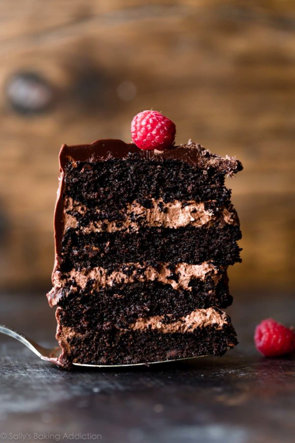
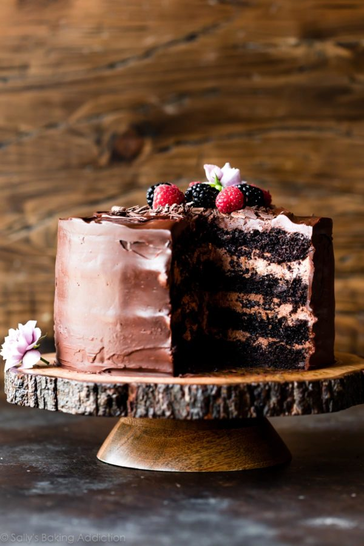

Dark Chocolate Mousse Cake

This super moist dark chocolate mousse cake combines unsweetened natural cocoa powder and dark cocoa powder for an extra rich flavor. Fill the cake with a simplified chocolate mousse and cover the whole dessert with semi-sweet chocolate ganache. If needed, you can prepare the ganache and mousse ahead of time.
My s’mores chocolate mousse inspired me to play around in the kitchen the other week. I’ve always loved chocolate mousse, back to my childhood when my mom served it as an easy (yet totally elegant) dessert on the holiday table. Chocolate mousse is simple divinity in its own right, but when paired with chocolate cake, it’s downright decadent.
I made this chocolate mousse cake for my husband Kevin’s birthday. This cake basically demands a huge gathering because– trust me– you don’t want to be left alone with its temptation. It WILL call out your name each time you open the refrigerator.
Taunting you.

Recipe
Ingredients
- 1 and 3/4 cups (219g) all-purpose flour
- 3/4 cup (62g) unsweetened natural cocoa powder
- 1 and 3/4 cups (350g) granulated sugar
- 2 teaspoons baking soda
- 1 teaspoon baking powder
- 1 teaspoon salt
- 2 teaspoons espresso powder (optional)
Instructions
- Preheat oven to 350°F (177°C). Grease four 8-inch or 9-inch cake pans, line with parchment paper, then grease the parchment paper. Parchment paper helps the cakes seamlessly release from the pans.
- Make the cake: Whisk the flour, cocoa powder, sugar, baking soda, baking powder, salt, and espresso powder (if using) together in a large bowl. Set aside. Using a handheld or stand mixer fitted with a whisk attachment (or you can use a whisk) mix the oil, eggs, and sour cream together on medium-high speed until combined. Add the buttermilk and vanilla and mix until combined. Pour the wet ingredients into the dry ingredients, add the hot water/coffee, and whisk or beat on low speed until the batter is completely combined. Fold in the chocolate chips, if using.